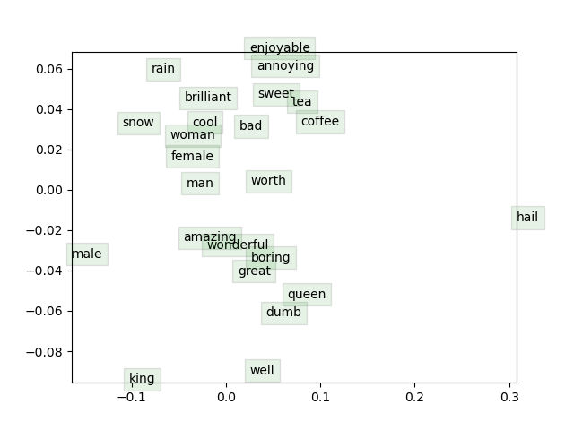

Assignment 2
Documentation: CS 224n Assignment #2: word2vec
1 Written: Understanding word2vec
(a)
The true empirical distribution \(\mathbf{y}\) is a one-hot vector with a 1 for the true outside word o, and the \(k^{th}\) entry in \(\mathbf{\hat{y}}\) indicates the conditional probability of the \(k^{th}\) word being an ‘outside word’ for the given c. So only the term associated with word o remains.
\[
-\sum_{w \in V o c a b} y_{w} \log \left(\hat{y}_{w}\right)=-\log \left(\hat{y}_{o}\right)
\]
(b)
\[
\begin{aligned}
J_{\text {naive-softmax} }\left(\mathbf{v}_{c}, o, \mathbf{U}\right)
&=-\log P(O=o | C=c) \\
&= -\log \frac{\exp \left(\mathbf{u}_{o}^{\top} \mathbf{v}_{c}\right)}
{\sum_{w \in \operatorname{Vocab} } \exp \left(\mathbf{u}_{\mathbf{w} }^{\top} \mathbf{v}_{c}\right)} \\
&= - {u}_{o}^{\top}{v}_{c} + \log \sum_{w \in \operatorname{Vocab} } \exp \left(\mathbf{u}_{\mathbf{w} }^{\top} \mathbf{v}_{c}\right)
\end{aligned}
\]
\[
\begin{aligned}
\frac{\partial J_{\text {naive-softmax} }\left(\mathbf{v}_{c}, o, \mathbf{U}\right)}{\partial v_c}
&= -u_o + \sum_{o \in \operatorname{Vocab} }\frac{\exp(u_o^\top v_c)}{\sum_{w \in \operatorname{Vocab} } \exp \left(\mathbf{u}_{\mathbf{w} }^{\top} \mathbf{v}_{c}\right)}
\frac{\partial (u_o^\top v_c)}{\partial v_c}\\
&=-u_o + \sum_{o \in \operatorname{Vocab} } P(O=o | C=c) u_o \\
&=- U y + U \hat y \\
&= U(\hat y - y)
\end{aligned}
\]
(c)
\[
\begin{aligned}
\frac{\partial J_{\text {naive-softmax} }\left(\mathbf{v}_{c}, o, \mathbf{U}\right)}{\partial u_w}
&= -v_c \mathbb{1}_{\{w=o\}} + \frac{\exp(u_w^\top v_c)}{\sum_{w \in \operatorname{Vocab} } \exp \left(\mathbf{u}_{\mathbf{w} }^{\top} \mathbf{v}_{c}\right)}
\frac{\partial (u_w^\top v_c)}{\partial u_w}\\
&=-v_c \mathbb{1}_{\{w=o\}} + P(w | c) v_c \\
&=v_c( \hat y_w - \mathbb{1}_{\{w=o\}})
\end{aligned}
\]
where \(\mathbb{1}\) is the indicator function.
(d)
\[
\frac{\partial}{\partial U} \mathbf{J}_{\text {naive-softmax }}\left(\mathbf{v}_{c}, o, \mathbf{U}\right)=\left[\frac{\partial \mathbf{J}\left(\mathbf{v}_{c}, o, \mathbf{U}\right)}{\partial \mathbf{u}_{1}}, \frac{\partial \mathbf{J}\left(\mathbf{v}_{c}, o, \mathbf{U}\right)}{\partial \mathbf{u}_{2}}, \ldots, \frac{\partial \mathbf{J}\left(\mathbf{v}_{c}, o, \mathbf{U}\right)}{\partial \mathbf{u}_{|V o c a b|}}\right]
\]
Each term can be obtained from Answer (c).
(e)
The derivation of ReLU activation funciton is:
$$
f(x)=
\begin{cases}
0 & \text { if } x<0 \
1 & \text { if } x>0\end{cases}
$$
(f)
The derivation of sigmoid function is:
$$
\sigma'(x) = \sigma(x) \left(1-\sigma(x)\right)
$$
(g)
\[
\begin{aligned}
&\frac{\partial}{\partial \mathbf{v}_{c}} \mathbf{J}_{\text {neg-sample }}\left(\mathbf{v}_{c}, o, \mathbf{U}\right)=-\frac{\partial}{\partial \mathbf{v}_{c}} \log \left(\sigma\left(\mathbf{u}_{o}^{\top} \mathbf{v}_{c}\right)\right)-\frac{\partial}{\partial \mathbf{v}_{c}} \sum_{k=1}^{K} \log \left(\sigma\left(-\mathbf{u}_{k}^{\top} \mathbf{v}_{c}\right)\right)\\
&=-\frac{1}{\sigma\left(\mathbf{u}_{o}^{\top} \mathbf{v}_{c}\right)} \frac{\partial}{\partial \mathbf{v}_{c}} \sigma\left(\mathbf{u}_{o}^{\top} \mathbf{v}_{c}\right)-\sum_{k=1}^{K} \frac{\partial}{\partial \mathbf{v}_{c}} \log \left(\sigma\left(-\mathbf{u}_{k}^{\top} \mathbf{v}_{c}\right)\right)\\
&=-\frac{1}{\sigma\left(\mathbf{u}_{o}^{\top} \mathbf{v}_{c}\right)} \sigma\left(\mathbf{u}_{o}^{\top} \mathbf{v}_{c}\right)\left(1-\sigma\left(\mathbf{u}_{o}^{\top} \mathbf{v}_{c}\right)\right) \mathbf{u}_{o}-\sum_{k=1}^{K} \frac{1}{\sigma\left(-\mathbf{u}_{k}^{\top} \mathbf{v}_{c}\right)} \frac{\partial}{\partial \mathbf{v}_{c}} \sigma\left(-\mathbf{u}_{k}^{\top} \mathbf{v}_{c}\right)\\
&=\left(\sigma\left(\mathbf{u}_{o}^{\top} \mathbf{v}_{c}\right)-1\right) \mathbf{u}_{o}-\sum_{k=1}^{K} \frac{1}{\sigma\left(-\mathbf{u}_{k}^{\top} \mathbf{v}_{c}\right)} \sigma\left(-\mathbf{u}_{k}^{\top} \mathbf{v}_{c}\right)\left(1-\sigma\left(-\mathbf{u}_{k}^{\top} \mathbf{v}_{c}\right)\right)\left(-\mathbf{u}_{k}\right)\\
&=\left(\sigma\left(\mathbf{u}_{o}^{\top} \mathbf{v}_{c}\right)-1\right) \mathbf{u}_{o}+\sum_{k=1}^{K}\left(1-\sigma\left(-\mathbf{u}_{k}^{\top} \mathbf{v}_{c}\right)\right) \mathbf{u}_{k}
\end{aligned}
\]
\[
\begin{aligned}
\frac{\partial J_{\text {neg-sample} }\left(v_{c}, o, U\right)}{\partial u_o}
&=-\frac{\sigma\left(\mathbf{u}_{o}^{\top} \mathbf{v}_{c}\right)\left(1- \sigma\left(\mathbf{u}_{o}^{\top} \mathbf{v}_{c}\right)\right)}{\sigma\left(\mathbf{u}_{o}^{\top} \mathbf{v}_{c}\right)}v _c
\\
&= \left(\sigma\left(\mathbf{u}_{o}^{\top} \mathbf{v}_{c}\right)-1\right)v_c
\end{aligned}
\]
\[
\begin{aligned}
\frac{\partial J_{\text {neg-sample} }\left(v_{c}, o, U\right)}{\partial u_k}
&=
-
\frac{\sigma\left(-\mathbf{u}_{k}^{\top} \mathbf{v}_{c}\right)\left(1- \sigma\left(-\mathbf{u}_{k}^{\top} \mathbf{v}_{c}\right)\right)}
{\sigma\left(-\mathbf{u}_{k}^{\top} \mathbf{v}_{c}\right)}(-v_c)\\
&= \left(1- \sigma\left(-\mathbf{u}_{k}^{\top} \mathbf{v}_{c}\right)\right)v_c
\end{aligned}
\]
(h).
The derivation here is intuitive, i.e. simply sum them considering the multiplicity.
\[
\frac{\partial J_{\text {neg-sample} }\left(v_{c}, o, U\right)}{\partial u_k} = \sum_{x=1}^{K}\mathbb{1}_{\lbrace u_x=u_k \rbrace}\left(1- \sigma\left(-\mathbf{u}_{k}^{\top} \mathbf{v}_{c}\right)\right)v_c
\]
(i).
\[
\begin{aligned}
\partial \mathbf{J}_{\text {skip-gram } }\left(\mathbf{v}_{c}, w_{t-m}, \dots w_{t+m}, \mathbf{U}\right) / \partial \mathbf{U}
&=\sum_{-m \leq j \leq m \atop j \neq 0} \partial \mathbf{J}\left(\mathbf{v}_{c}, w_{t+j}, \mathbf{U}\right) / \partial \mathbf{U} \\
\partial \mathbf{J}_{\text {skip-gram } }\left(\mathbf{v}_{c}, w_{t-m}, \dots w_{t+m}, \mathbf{U}\right) / \partial \mathbf{v_c}
&=\sum_{-m \leq j \leq m \atop j \neq 0} \partial \mathbf{J}\left(\mathbf{v}_{c}, w_{t+j}, \mathbf{U}\right) / \partial \mathbf{v_c} \\
\partial \mathbf{J}_{\text {skip-gram } }\left(\mathbf{v}_{c}, w_{t-m}, \dots w_{t+m}, \mathbf{U}\right) / \partial \mathbf{v_w}
&=\sum_{-m \leq j \leq m \atop j \neq 0} \partial \mathbf{J}\left(\mathbf{v}_{c}, w_{t+j}, \mathbf{U}\right) / \partial \mathbf{v_w} =0\\
\end{aligned}
\]
2 Coding: Implementing word2vec
Training Results:
